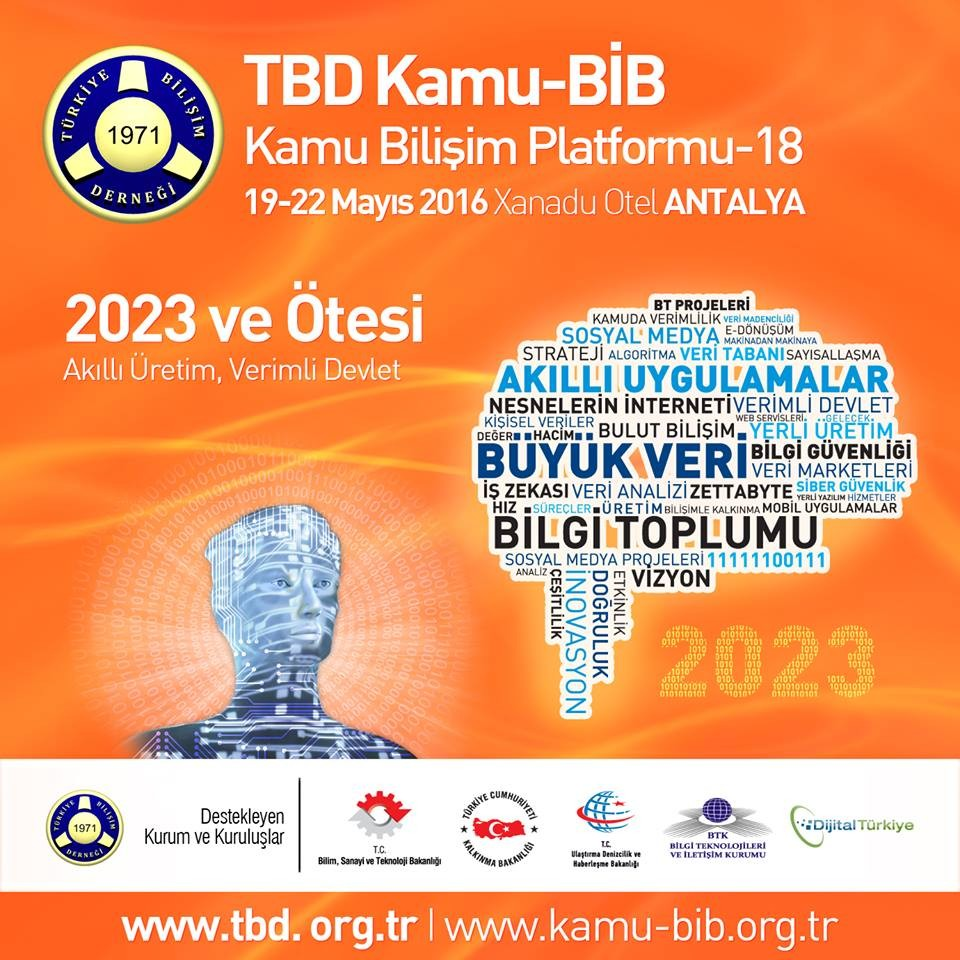

TBD Kamu-BİB Kamu Bilişim Platformu-18
Türkiye Bilişim Derneği (TBD), kurulduğu 22 Nisan 1971 tarihinden itibaren, 45 yıldır, ülkemiz bilişim sektörününün gelişmesi için birçok çalışmalara öncülük eden ve ilklere imza atan Türkiye’nin en büyük Sivil Toplum Örgütlerinden biri olarak 7 Mart 1994 tarihli Bakanlar Kurulu Kararı ile “Kamu Yararına Çalışan Bir Dernek” olarak faaliyetlerini sürdürmektedir.
TBD bugüne kadar, ülkemizin bilişim sektörünün temel problemleri ile çözüm önerilerinin, teknolojik gelişmeler ve gelecek öngörülerinin, ülkemizin 2023 Vizyonu’na ulaşmasında izlenmesi gereken bilişim politikalarının başta olmak üzere, bilişim teknolojileriyle ilgili her alanda çok değerli bilgi, değerlendirme ve tespitlerin yapıldığı TBD 32. Ulusal Bilişim Kurultayı, TBD BİMY’23, TBD KAMU-BİB’17, TBD 3. Uluslararası Bilişim Hukuku Kurultayı, TBD 9. İstanbul Bilişim Kongresi gibi etkinlikleri başarı ile gerçekleştirmiştir.

TBD Kamu-BİB Kamu Bilişim Platformu-18 Etkinlik DUYURUSU
Türkiye Bilişim Derneği
KAMU BİLİŞİM MERKEZLERİ YÖNETİCİLERİ BİRLİĞİ (TBD Kamu-BİB)
Kamu Bilişim Platformu 18 etkinliği
19-22 Mayıs 2016 tarihlerinde
Antalya Xanadu Otel’de gerçekleştiriliyor.
2023 ve Ötesi: “Akıllı Üretim, Verimli Devlet”
TBD Kamu-BİB’18, Ülkemizin Bilgi Toplumuna Dönüşüm çalışmaları çerçevesinde 2023 ve Ötesi: “Akıllı Üretim, Verimli Devlet” ana teması ile yapılıyor.
Etkinlikte; büyük veri ve kamu verisi ile akıllı uygulamalar, projeler, destekler ve mevzuat konuları davet edilen konuşmacılar ve katılımcılar tarafından değerlendirilecektir. Etkinlik sonrası daha önceki dönemlerde olduğu gibi bilgi toplumu çalışmalarına katkı verecek tespit ve öneriler davetli üst yöneticilerle paylaşılacaktır.
Katılım : Her sene olduğu gibi bu sene de 400’ün üzerinde Kamu, Üniversite ve Özel Sektör Bilişim Merkezi Yöneticisi ile kamu üst düzey yetkilileri katılacaktır.
TBD Kamu-BİB’18 Çalışma Grupları:
- Kamu Verisi Kullanılarak Geliştirilen Akıllı Uygulamalar
- Kamu Verisinin Paylaşılması Politika ve Mevzuatı
- Kamu BT Projelerinin Yarattığı Ekonomik Değer
- Büyük Veri Uygulamaları
Etkinlik Kapsamı : Etkinlikte, öne çıkan ve katma değeri yüksek kamu projelerine yer verilecek olup, ülkemizin bilişimine yön veren davetli konuşmacıların katılacağı paneller düzenlenecek ve bu paneller öncesi TBD Kamu-BİB bünyesinde oluşturulan 4 çalışma grubu raporlarını sunacaktır. Her panelimizde kamu, üniversite ve özel sektör temsilcileri konu ile ilgili görüşlerini katılımcılarla paylaşacaktır. Günümüzün en önemli teknolojisi durumunda olan “Büyük Veri” ayrı bir panelde ele alınacak ve yaptığı işlerle büyük veri teknolojileri konusunda öncü özel sektör temsilcilerinin politika belirleyici görüşleri paylaşılacaktır.
İşbirliği Platformu: TBD Kamu-BİB’18 etkinliği TBD Sayısal Gündem 2020 Uzmanlık Grupları’nın TBD Kamu-BİB Çalışma Gruplarına verdiği katkı ile her sene daha etkin raporlar ortaya koymaktadır.
Her zaman karar vericilerin yanında olmuş tek Kamu Yararına Dernek olan Türkiye Bilişim Derneği tarafından düzenlenen TBD Kamu-BİB’18 etkinliğimizde sizleri de aramızda görmek istiyoruz. Katılımınızı ve desteğinizi bekler, saygılar sunarız.
TÜRKİYE BİLİŞİM DERNEĞİ www.tbd.org.tr